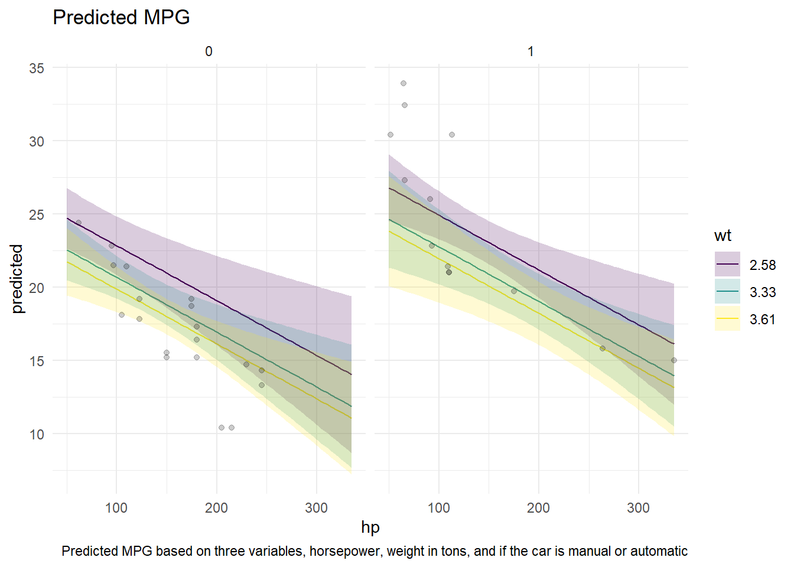
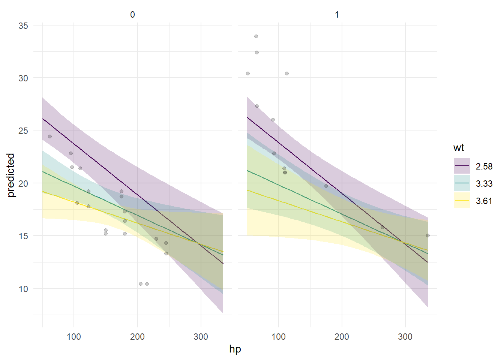

The data set I am working with is mtcars. A simple data set showing different variables involving car data. Within this data set there are 32 observations. The variables I have focused on are to predict average miles per gallon based on horsepower, weight of the car, and if it is a manual or automatic car. The data came directly from R and was easily read in, I believe we have used this data set briefly in a previous class. Another important piece of context is that there are not a lot of observations in this data set so the information most likely shows a good general trend but is missing a lot of cars.
library(broom)
Warning: package 'broom' was built under R version 4.4.3
library(ggeffects)
Warning: package 'ggeffects' was built under R version 4.4.3
library(tidyverse)
Warning: package 'ggplot2' was built under R version 4.4.3
── Attaching core tidyverse packages ──────────────────────── tidyverse 2.0.0 ──
✔ dplyr 1.1.4 ✔ readr 2.1.5
✔ forcats 1.0.0 ✔ stringr 1.5.1
✔ ggplot2 4.0.2 ✔ tibble 3.2.1
✔ lubridate 1.9.4 ✔ tidyr 1.3.1
✔ purrr 1.0.2
── Conflicts ────────────────────────────────────────── tidyverse_conflicts() ──
✖ dplyr::filter() masks stats::filter()
✖ dplyr::lag() masks stats::lag()
ℹ Use the conflicted package (<http://conflicted.r-lib.org/>) to force all conflicts to become errors
data(mtcars)
cars_mod <-lm(mpg ~ hp + wt + am, data = mtcars)cars_mod |>tidy()
pred_cars <-ggpredict(cars_mod, terms =c("hp","wt [threenum]","am")) |>as.data.frame(terms_to_colnames =TRUE) |>as_tibble()ggplot(data = pred_cars, aes(x = hp, y = predicted)) +geom_line(aes(color = wt)) +facet_wrap(~am) +geom_ribbon(data = pred_cars, aes(y = predicted,ymin = conf.low,ymax = conf.high,fill = wt),alpha =0.2) +geom_point(data = mtcars, aes(y = mpg), alpha =0.2) +scale_fill_viridis_d() +scale_color_viridis_d() +theme_minimal() +labs(title ="Predicted MPG",caption ="Predicted MPG based on three variables, horsepower, weight in tons, and if the car is manual or automatic")
Warning: Combining variables of class <factor> and <numeric> was deprecated in ggplot2
3.4.0.
ℹ Please ensure your variables are compatible before plotting (location:
`combine_vars()`)
Warning: Combining variables of class <numeric> and <factor> was deprecated in ggplot2
3.4.0.
ℹ Please ensure your variables are compatible before plotting (location:
`combine_vars()`)

In this model, the most obvious piece to see is that the manual cars tend to have higher mpg on average. Off of that, the cars who weight less also have less mpg along with as horsepower increases, mpg is also decreasing. This graph shows what we would typically expect from the data. Something that stands out is how the manual cars have a higher mpg on average. The manual cars are the one with a 1 for the interaction term
cars_int <-lm(mpg ~ hp + wt + am + hp:wt, data = mtcars)cars_int |>tidy()
pred_int <-ggpredict(cars_int, terms =c("hp","wt [threenum]","am")) |>as.data.frame(terms_to_colnames =TRUE) |>as_tibble()ggplot(data = pred_int, aes(x = hp, y = predicted)) +geom_line(aes(color = wt)) +facet_wrap(~am) +geom_ribbon(data = pred_int, aes(y = predicted,ymin = conf.low,ymax = conf.high,fill = wt),alpha =0.2) +geom_point(data = mtcars, aes(y = mpg), alpha =0.2) +scale_fill_viridis_d() +scale_color_viridis_d() +theme_minimal() +labs(title ="Predicted MPG with an interaction",caption ="Predicted MPG based on three variables, horsepower, weight in tons, and if the car is manual or automatic. Along with an interaction term between horsepower and weight")

This visual does a good job because it has different slopes. Determining if horsepower and weight are related based on the interaction term. The graphics are similar to the previous but it is clear that light cars mpg decreases at a much higher rate as horsepower increases. This may be because people who try to make cars fast look for light cars and increase the horsepower drastically. The trend is the same for the next two weights as well, with the heaviest car having the smallest decreasing slope as horsepower increases.
I think the largest flaw with the approach is that the data set I used only had 32 observations. There are far more cars that could be in the data set. If I had more time I wish there were more variables I could have used to determine if it affects the miles per gallon. Weight and horsepower are probably the two most impactful variables but what other variables may be impactful.
The visual’s I used relate to the class because we have been using regression models and that is what I have used here. Using certain variables to determine their affect on the mpg of cars. While I also faceted and used coloring to make the data set look appealling.